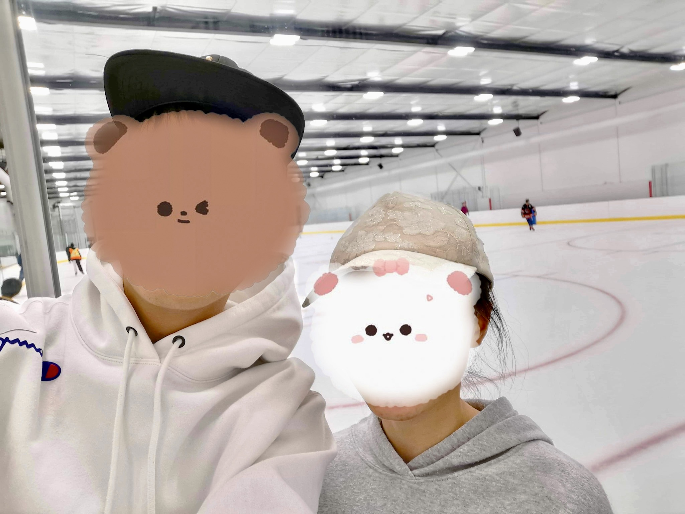

🐱💞🙈
Sindy 😘
@黎斯羽(Sindy.sally.maria) (01/20)
黎斯羽，2020年07月28日是我第一次遇见你，那时我对于你的印象就是一个充满自信而又优秀的女孩子。你擅长于很多事情，眼里也总是充满光芒。我那时将你作为朋友，同样也是我想超越的目标。但我从未想过你会出现在我的生活。
--Music originates 《心流》 from YouTube Channel “Vicky宣宣”
直到2021年七月，在一个布满星辰的夜晚，我们几个孩子围在篝火前玩着Truth or Dare。我抱着你转圈，那是我第一次近距离接触你，感觉很奇妙吧。那一刻的时间对于我来说是静止的，周围的一切事物都不那么重要，你成为我唯一想要守护的人。但我不是一个主动的人，我没有勇气去找你。只是在默默的注视你，点点滴滴发现了你更多的亮点。认真，努力，总是充满希望。
在七月四号的晚上。我记得很清楚，我们两个坐在阳台上，突然你问了我，“Est-ce tu aimes quelqu'un en ce moment?”。那时心情挺复杂的，我不知道你的想法，隐约感觉你也喜欢我，但又不确定。但总归不想错过, “Oui, peut-être toi un peu......”。这也成为我们两个交往的开始。
那一个月内，我经常找你，但每次见到你都还是很紧张。这也许就是所谓的热恋期吧... 但总归每次见到你都很开心。终于在8月7号的时候你答应做我的女朋友，那天真的很开心！我也心中许诺要尽可能守护你。
之后的时间，因为学业压力和父母的要求发生了一些波折。但点点滴滴总归还是美好的，没有争吵的感情也并不完整。我们互相遵守着我们之间的诺言。我承认有些时候欲望驱使着我总想占有你更多，但理智告诉我应该尊重你的想法。并且我们目前最主要的事情还是学习，也不应因为感情占有太多的时间。
无论如何你都是我的唯一，我不会离开你。爱你，斯羽。
——臧九诚
--Music originates 《勇气—梁静茹》 from YouTube Channel “ Star lyric副頻道”
勇气 for love
2022年08月09号，这是我作为你男朋友的第二年的第二天，也是又是能见到你的一天。任何时候回想到那时，内心深处都难以平复。☀️
那天，我们相约在冰场滑冰⛸️。相较于你，即使来自北方的我在冰上也依旧笨拙。我们在冰上，你拉着我的手，守候在我旁边。（虽然感觉你很小一只🤣），但拉着你却给我很强的安全感，渐渐的我抵销了对于冰面的恐惧。就这样我们嬉戏了很久，直到筋疲力尽。之后，在回家的路上牵着你的手，很温暖，很踏实……💕（一种难以言说的感觉）。
即使到家后，我也不舍你离去，相互拥抱在一起很久。但我们终究还是要分别。在送你回家前，我本能的想要亲吻你，但你躲开了并低下头，我也只好作罢（虽然有些失望，但我觉得还是应该尊重你的想法）。但下一秒，你突然回过头轻轻吻在了我的嘴唇上（说实在的我当时没有任何反应，只觉得脑子一片懵🙈），当我回过神后，只看见红着脸的你🙈（我不知道我自己怎样）。这应该是我们两个人共同的初吻吧，虽然发生在一瞬间，但永远印象深刻。
送你回家后，我还是回想起了那个瞬间。首先是愧疚感，轻易的夺走了一个女孩子的初吻。但更多思考的是我应该负起的责任，我能够带给你什么。无论你属不属于我（虽然我想你永远陪在我身边），但我都会在意你，希望你永远开心。同样我也回想了这一年我们点点滴滴的相处，在你的陪伴下我渐渐长大，慢慢学会如何照顾保护自己心爱的人。在有你陪在我身边的时候，我就很满足了。最后，我想感谢你愿意相信我，愿意将你的爱托付给我，我也会尽我所能照顾好你。
还是和去年一样，你是第一也是唯一，Love You All And Always 💞
(Edit Aug. 25th) 我后来了解到.....也许你并不喜欢亲吻时的感受。抱歉给你带来这种不好的感受，但我依旧很感动你愿意只是为了满足我而同意。LOVE YOU 💕

Ton 21e anniversaire
C'est un jour spécial parce que tu viens dans ce monde. Selon les bayésiens, cela peut être un miracle. C'est même une chance plus faible que de trouver un petit sable dans l'océan sur la planète. Mais cette magie s'est produite deux fois, parmi 7,9 milliards de personnes, nous avons commencé notre relation dans un pays très éloigné de notre patrie. Je suis heureux de voir que cela s'est produit et de célébrer ton anniversaire avec toi. C'est un jour spécial non seulement pour toi, mais aussi pour moi.
Je t’adore toujours, profite de ce morceau du monde. Rien de spécial, mais tout est spécial. 💞
--Music originates "Ed Sheeran - Thinking Out Loud" from YouTube Channel “Ed Sheeran"
Timeline:
2020年07月28日 First time connecting
2021年07月04日 Start in love
2021年08月07日 In relationship
2021年09月25日 Freezing relationship
2021年10月25日 Recover relationship
2021年12月23日 First Christmas with U ( Skiing )
2022年01月11日 My first birthday with U (17th)
2022年01月20日 Siyu’s 18-year-old birthday（So lovely❤️）
2022年02月14日 Bonne Saint-Valentin 💞 L U 😘
2022年04月02日 We notice our parents about the relationship between us 🙈
2022年07月07日 After one year together, we promise to accompany each other in next several years 💞
2022年07月27日 Vieux-Port de Montréal, International Firework show. The only difference from last time is that you came into my life to be with me under the fancy sky. 🎆
2022年08月04日 七夕节快乐🌹 (Bon Fête Qixi)
2022年08月08日 🙃 One Year Anniversary
2022年10月10日 Thanksgiving: I thanks give for you come to my life 🙈😉